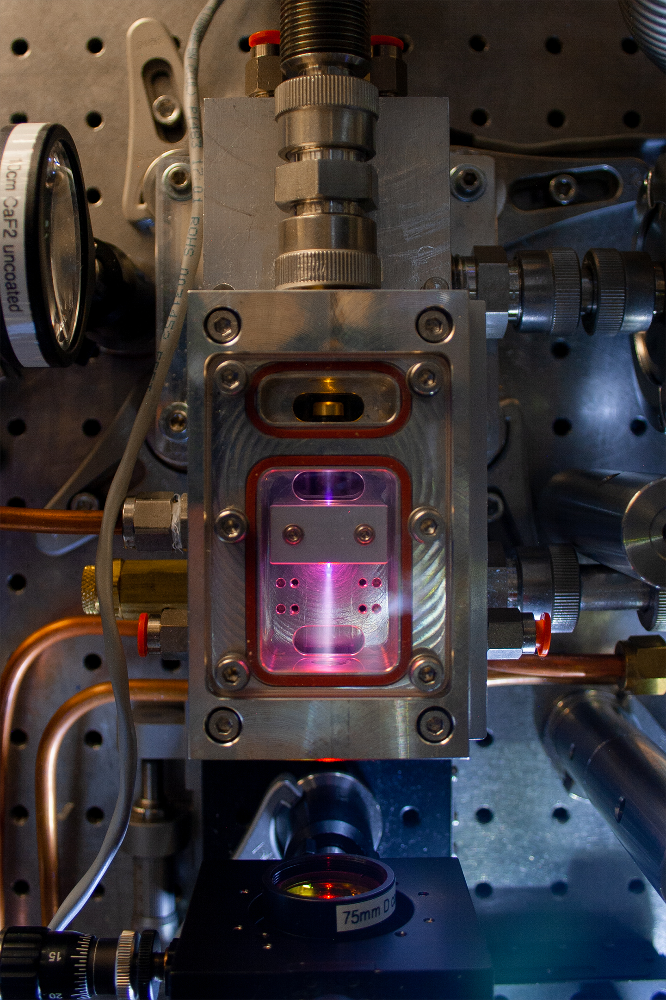

JILA · University of Colorado Boulder
…for science, technology & society. We build near- to mid-infrared ultrafast, high-power laser systems that drive tabletop soft X-ray sources.
Dr Hemmer leads a team developing high average power and high energy ultrafast laser systems, with applications ranging from tabletop X-ray sources to laser-driven particle acceleration.